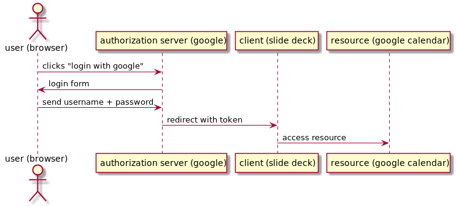

https://.../oauth2/authorize ?response_type=token &redirect_uri=http://localhost:8080/callback &scope=openid &client_id=3can53th3tlmsnhcn1buji30i8
OAuth 2.0 workshop
sponsored by
About me
Matthias Kausl
Team lead and Java dev @ willhaben
blog: tech.willhaben.at
twitter: @willhabentech
Motivation
currently implementing OAuth 2.0 @willhaben
not everyone had knowledge about it
lots of frameworks that implement OAuth 2.0
look "under the hood" to understand it better
Goal
understand how these work

Agenda
Mini talk about OAuth 2.0
Workshop ⌨️
pizza üçï in between ;-)
What is OAuth 2.0?
OAuth 2.0 is a authorization framework
It defines how a client application can
obtain authorization from a user
to access a resource on the users behalf
Vocabulary
authorization | give user access to a resource |
authentication | validate that the user is who he claims |
see also authentication vs authorization
Vocabulary
client | any application |
resource | something the user has access to |
Vocabulary
access token | token representing the authorization |
id token | contains information of the user |
Example: access google calendar
This slide deck (the client)
wants to access
my google calendar (resource).
It needs to obtain authorization from googles authorization server.
OAuth 2.0 defines how to do this.
Example

Example flow
https://accounts.google.com/o/oauth2/v2/auth (1)
?client_id=1010832371207... (2)
&redirect_uri=http://url-of-slidedeck.com/... (3)
&response_type=token (4)
&scope=https://www.googleapis.com/auth/calendar.readonly (5)Authorization server URL
Client ID specific to the authorization server
URL the authorization server redirects back to
Which flow (grant type) to use
What the client wants to access
Example
Example (ctd.)
The retrieved access token can be used to access the google calendar API
the id token can be used to identify the user
Grant types
The steps needed to get the access token are defined in so called grant types.
In this workshop we will look at two grant types:
Implicit (google calendar example)
Authorization Code
Lets start coding
You need
your laptop (any editor, IDE, …)
internet access + a browser
a local webserver serving from port 8080 (
http://locahost:8080)a tool for making HTTP requests (curl, postman, …)
Lets start coding
clone spring boot boilerplate repo: http://bit.ly/wh-oauth-java
https://github.com/willhaben/oauth-workshop-java-template
Task 1 - Implicit Flow
or
Solution 1
Query Parameters
|
|
| |
| openid |
| token |
Request
Solution 2
Query Parameters
|
|
| |
|
|
| code |
Request
https://.../login ?response_type=code &redirect_uri=http://localhost:8080/callback &scope=openid+devjourfix.willhaben.test/devjourfix+devjourfix.willhaben.test/final &client_id=5vkkniseds4i1s4pst0uoe280u">
Request 2
POST https://devjourfix-willhaben-test.auth.eu-central-1.amazoncognito.com/oauth2/token
Headers Content-Type: 'application/x-www-form-urlencoded' Authorization: Base64Encode(client_id + ':' + client_secret)
code=xxxxx grant_type=authorization_code client_id=5vkkniseds4i1s4pst0uoe280u redirect_uri=http://localhost:8080/callback
Task 3 - Refresh token
Solution 3
POST https://devjourfix-willhaben-test.auth.eu-central-1.amazoncognito.com/oauth2/token
Headers Content-Type: 'application/x-www-form-urlencoded' Authorization: Base64Encode(client_id + ':' + client_secret)
refresh_token=xxxxx grant_type=refresh_token client_id=5vkkniseds4i1s4pst0uoe280u
Task 4 - Token validation
Thank you
Solutions and slides: